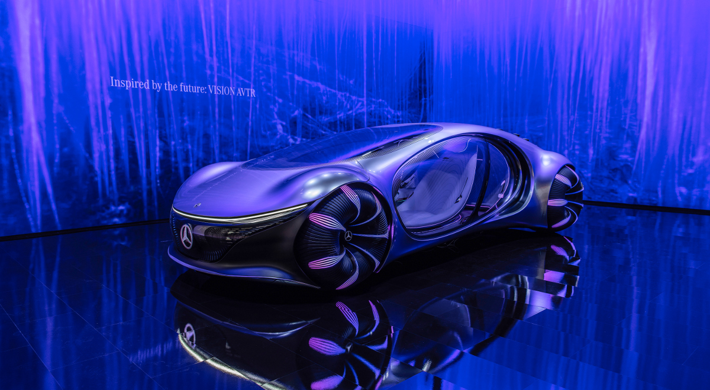
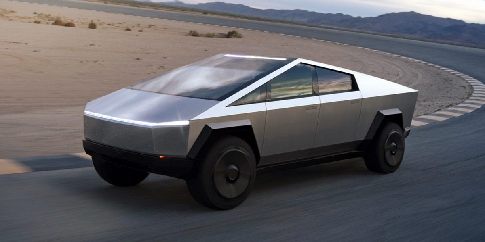
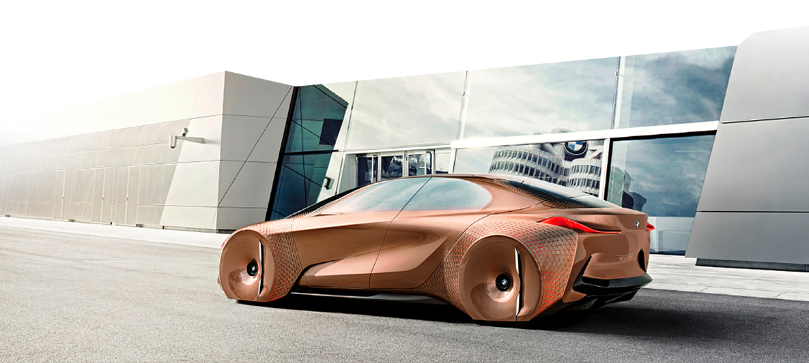
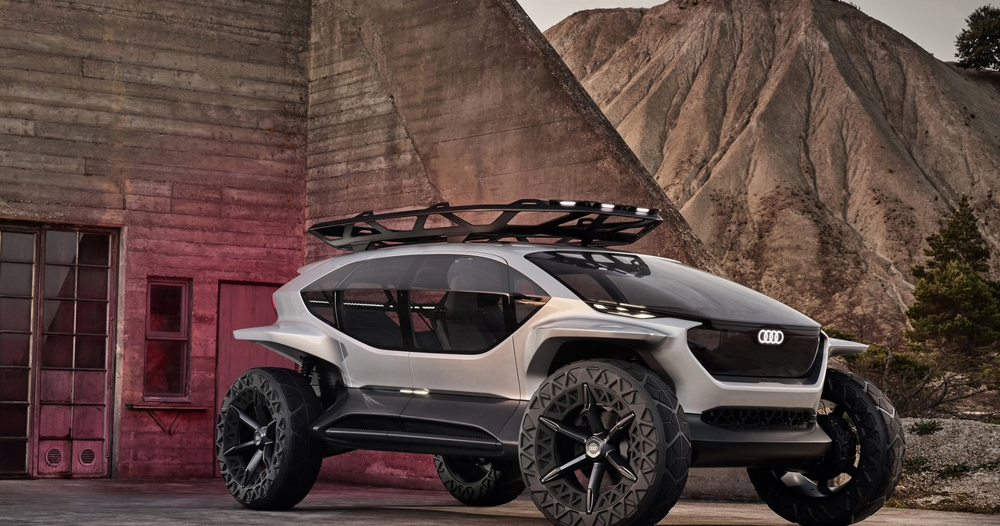

Mercedes-Benz Vision AVTR to futurystyczny prototyp inspirowany filmem „Avatar”.
To auto jest wizją tego, jak samochody mogą wyglądać w dalekiej przyszłości.
Vision AVTR ma organiczny i aerodynamiczny design z „łuskami” na tylnej części,
które pomagają w aerodynamice i komunikacji z otoczeniem.
Auto napędzane jest w pełni elektrycznie,
a jego baterie wykonane są z materiałów organicznych,
dzięki czemu są przyjazne środowisku. Wnętrze pojazdu nie posiada tradycyjnej
kierownicy – samochód jest sterowany gestami i dotykiem,
co zapewnia niesamowite wrażenia z jazdy.

Tesla Cybertruck to elektryczny prototyp pick-upa,
który swoim wyglądem przypomina pojazd rodem z filmów science fiction.
Jego nadwozie wykonane jest z wyjątkowo wytrzymałej stali nierdzewnej,
co sprawia, że auto jest niemal niezniszczalne. Cybertruck charakteryzuje się kanciastą,
futurystyczną sylwetką, co czyni go jedynym w swoim rodzaju na rynku samochodów.
Auto ma imponujące osiągi, w tym możliwość przyspieszenia od 0 do 100 km/h
w mniej niż 3 sekundy w najmocniejszej wersji.
Posiada również dużą przestrzeń ładunkową i zaawansowane funkcje autonomiczne.

BMW Vision Next 100 to prototyp zaprojektowany z myślą o przyszłości motoryzacji,
skupiający się na autonomicznej jeździe i personalizacji.
Auto wyróżnia się zmiennym kształtem nadwozia – tak zwany „Alive Geometry” pozwala
karoserii dostosowywać się do warunków jazdy i preferencji kierowcy.
Wnętrze może działać w trybie „Boost” dla aktywnej jazdy lub w
trybie „Ease” dla w pełni autonomicznej podróży.
Przezroczysta deska rozdzielcza i rozszerzona rzeczywistość pomagają kierowcy
widzieć dane bez odrywania wzroku od drogi.

Audi AI Quattro to prototyp terenowego elektrycznego SUV-a,
który został zaprojektowany z myślą o przygodach na łonie natury.
Jego nadwozie jest ultralekkie, wykonane z aluminium i włókna węglowego,
co zapewnia doskonałe właściwości terenowe. Samochód ma olbrzymie,
przeszklone powierzchnie, co zapewnia panoramiczny widok otoczenia. AI
posiada drony zamiast tradycyjnych reflektorów,
które oświetlają drogę przed samochodem i mogą pełnić funkcję zwiadowców.
Auto ma również zaawansowane systemy autonomiczne,
co czyni jazdę w trudnych warunkach jeszcze bardziej ekscytującą.